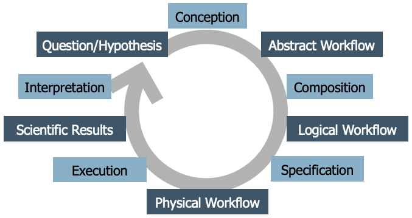
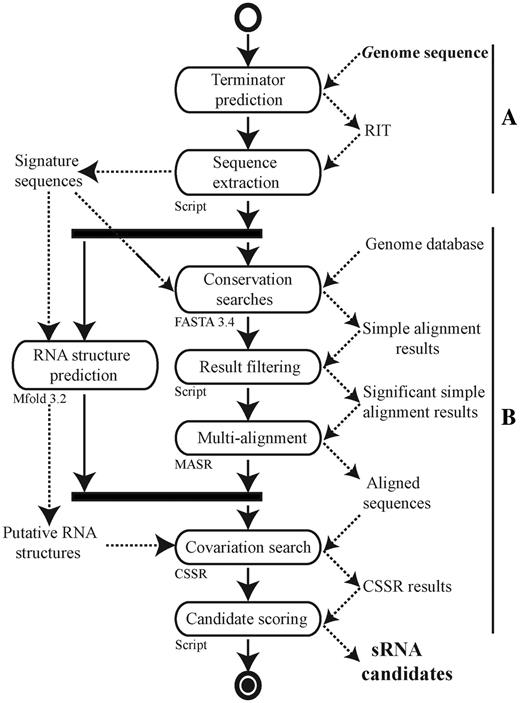
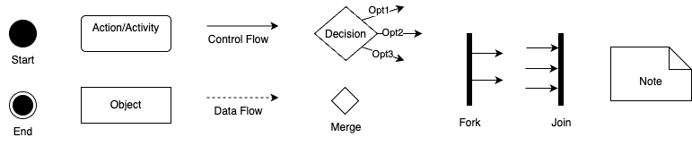
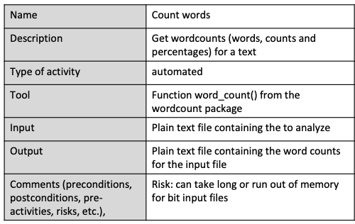

Data Analysis Workflows#
A data analysis workflow (DAW) is a set of programs operating together to analyze some input data to produce a specific output to answer a scientific research question. Programs in a DAW are often interdependent, i.e., the successful execution of some (upstream) program is a prerequisite for the execution of other (downstream) programs. Technically, DAWs are often orchestrations (“glue code”) of calls to different tools, and these can have many forms. For example, they can be implemented as R scripts, Python code, Jupyter Notebooks, or in one of the (literally!) hundreds of workflow systems available today. Many of these systems are highly specialized, some are graphical, and some require little or no actual coding (and can be seen as following the low-code/no-code paradigm).
Note that DAWs are also often called scientific workflows or computational workflows, and we will use those terms interchangeably. Also, keep in mind that the word “workflow” is generally overloaded—it can also refer to business processes, document flows, etc. However, those are outside our focus. Our interest is specifically in data processing in a scientific context.
Understanding the Workflow Life Cycle#
To help make more sense of what we will be discussing in the following, let’s take a look at this diagram—what we call the Workflow Life Cycle:

It’s not the only version out there; the literature contains several life cycle models for workflows. However, this particular one was developed collaboratively during a week-long workshop, based on many discussions among workflow experts, so it reflects a common perspective. The idea is that developing a scientific workflow is not a one-time process. It’s cyclical—you often go through multiple iterations and refinements. But generally, the process follows a series of distinct stages:
It begins with a scientific question or hypothesis that requires some computational, data analysis process to be addressed.
Through a conception process an abstract worfklow is developed as a high-level representation of the functional steps involved in the analysis, as well as their interdependencies. This abstract workflow does not refer to actual code or executable programs, but rather uses domain-specific terms for describing operations to be carried out. It is platform-agnostic, meaning it does not assume any specific computing environment. Think of it as a blueprint that describes what needs to be done, but not exactly how.
Next, you translate the abstract workflow into a logical workflow. A logical DAW is a representation of the concrete programs that are to be executed and their interdependencies. Logical DAWs thus instantiate abstract DAWs. At this stage, you often start assuming certain runtime environments (like Python or Snakemake, local computer or remote cluster). However, this is still not yet the fully executable version.
Finally, the final step is the creation of a physical workflow that represents the order at which the programs of a DAW are to be executed together with the concrete input on which they operate. Here, you provide all the specific inputs, parameters, and details needed for execution. This version is ready to run on a particular infrastructure.
Executing the workflow then yields scientific results, which are interpreted and might lead to new or refined workflows.
In the following we take a closer look at workflow conception, composition and specification, and at selected techniques and tools for these phases.
Workflow Conception and Representing Abstract DAWs#
From a scientific standpoint, the conception phase of a workflow is critically important, and it should be approached systematically. Pereira et al. propose a workflow conception process using abstract workflows expressed as activity diagrams, combined with structured forms for recording the specific requirements for its nodes. Here is an example from bioinformatics paper by C. Pechon et al. published in the Journal Nucleic Acids Research (Volume 40, Issue 7, 1 April 2012, Pages 2846–2861, https://doi.org/10.1093/nar/gkr1141) under a CC-BY-NC license (which enables us to show it here):

Without going into its details, this example activity diagram shows that researchers have indeed used activity diagrams in published papers to convey the structure of their analysis more clearly than code would allow. The diagrams are easy to understand, even for scientists or collaborators who may not (want to) see or write the code. This makes them a powerful tool for discussion and alignment before any code is written.
UML Activity Diagrams#
Before we proceed, let’s understand how activity diagrams work. An activity diagram is a type of graph that visually represents the sequence of operations or steps in a workflow. It’s part of the UML (Unified Modeling Language) family, which is widely used in software engineering for modeling systems. A practical tool you can use is draw.io (also called diagrams.net), an online editor for creating various types of diagrams including UML. When using it, choose “UML 2.5” as the diagram type to have all symbols available that we use here.
As the name suggest, the primary elements in activity diagrams are activities, shown as rounded rectangles. Each activity represents a high-level operation or task, such as “Sequence Extraction”, “Conversation Analysis”, or “Text Search”. These are not tied to specific tools or software—they describe what you’re doing, not how.

The figure above summarizes the essential elements of activity diagrams that you should to know:
Start Node: A filled black circle that shows where execution begins.
End Node(s): Black circle(s) with an outer ring, marking one or more possible end points.
Activities (Actions): Rounded rectangles that describe operations or tasks.
Control Flow (Solid Arrows): Shows the order of execution from one node to the next.
Data Objects: To represent files, datasets, or inputs/outputs.
Data Flow (Dashed Arrows): Represents the flow of data between activities—optional but helpful for understanding dependencies.
Decision Node (Diamond): Indicates branching based on conditions (like an if/else, but also used for loops).
Merge Node (Diamond): Merges different branches back into a single flow.
Fork and Join (Thick Bars): Used to show parallel execution, i.e., tasks that can happen simultaneously.
Notes: For explanations or comments.
Now let’s look at some concrete examples of activity diagrams, inspired by our running Zipf example. Essentially, here we want to load a text file, count the words in it, and plot the word counts. A basic activity diagram could look like this:

Mind here that activity nodes must describe something that happens—a computation, a transformation, or a decision—not passive items like data states or files.
While object (data) flow is optional in UML activity diagrams, it can be useful when you want to make data dependencies explicit. Use data object nodes (rectangles) to show inputs and outputs, and use dashed arrows to show data flow (object flow), distinguishing it from solid arrows used for control flow, for example, you can add object nodes for input file and word counts to the diagram above, to clarify what data each action uses and produces:

You can also add free-floating notes or comments anywhere in the diagram for clarification. These can, for example, explain assumptions, point out missing elements, or provide documentation for future reference:

Activity diagrams allow you to model decisions (like if/else logic or switches) using decision nodes (diamonds). For instance, after count words, you might ask: Should I plot the word counts? If yes, plot word counts, if not, skip and go to next step:

You can use a merge node (also a diamond) to reconnect conditional paths, improving clarity—especially in large diagrams. It is optional, but it helps with visual clarity, especially for larger or nested flows.
Decision nodes can also be used to model loops, by routing the flow back to an earlier activity. For example, we might loop through a list of input texts, and check if more texts remain before we count words and plot word counts:

Loops are easily understood in activity diagrams and are visually intuitive.
Finally, activity diagrams also support modeling concurrency and parallelism using fork and join nodes (represented by thick horizontal bars). For example, after a text you might actually do differerent independent things (like counting words and plotting word counts, detecting the language of the text, and performing a sentiment analysis). Synchronize the branches one all are completed, then compile a report from all results:

Note that although the terms are used interchangeably, parallel and concurrent are not the same thing. Parallel means truly simultaneous execution (e.g., different machines or cores), while concurrent refers to interleaved tasks on a single core. At the activity diagram level, this distinction doesn’t matter, however, as it abstracts away those implementation details. So even if you’re not sure whether your workflow will be run in parallel or concurrently, you can still model it cleanly at this level.
Now we covered illustrations for the basic UML elements and their functionality. There are more elements that can be used in activity diagrams, and more UML diagram types, making UML a very versatile and flexible language. While this flexibility is advantageous, it can also present challenges in deciding the best way to model certain aspects. Often, there are multiple effective methods for modeling the same workflow, and finding the “best” way requires experience and feedback from peers. However, while you have flexibility in how and how much you utilize these elements, it is crucial to respect their intended meanings. For instance, ensure that an activity node contains an activity, and an object node contains an object. Control flow edges should define the flow of execution, while object flow edges should define the flow of objects.
Node Requirements#
When you have an abstract workflow that consists of multiple activities, it’s crucial to consider how these activities will be implemented in real code. Importantly, you don’t necessarily need to write all the code from scratch, as there might be existing tools or libraries you can leverage to facilitate the process. Again following the recommendation by Pereira et al., the next step towards implementing a workflow involves listing all the nodes within the abstract workflow and documenting their specific requirements. This includes detailing what each node is supposed to accomplish. Pereira et al., in their original paper, propose a comprehensive requirement form. While this might be excessive for our purposes, essential elements should still be documented.
Here is what you should consider documenting for each activity:
Name of the Activity: Provide a clear title for the task.
Description: Offer a detailed explanation of what the activity entails.
Type of Activity: Indicate whether it’s completely automatic, semi-automatic, or manual, recognizing that some workflows require human intervention.
Iputs and Outputs: Specify what data is needed before execution and what results are produced.
Implementation: Possibilities for implementing the activity, such as existing command line tools, web APIs, library functions, or if own code is required.
If necessary, you can also record preconditions and postconditions (that must be met before execution and document changes that occur afterwards), mandatory or optional nature of the activities (if they can be substituted), required pre-activities or risks (such as long execution times or memory constraints).

For example, let’s consider the “count words” activity in a zip workflow. This automated activity calculates word counts and percentages without manual intervention once input data is provided. We can implement it using our word count package, which includes a function that performs this task efficiently. Its input is a plain text file containing the text to analyze, and the output a plain text file with word counts for the input file. Large input files may pose a risk, a the process may be time-consuming or memory-intensive, suggesting precautions like not shutting down your laptop mid-analysis.
Non-Functional Requirements#
In addition to documenting functional requirements, which describe the specific functionalities and tasks a workflow performs, we will also record non-functional requirements. Non-functional requirements are crucial aspects of software or workflows that, while not directly related to the core functionality or data analysis processes, are still vital for the overall system.
For instance, within a workflow, non-functional requirements might include the need for the workflow to be executable on a standard computer or laptop, without necessitating access to high-performance clusters. Another requirement could be compatibility across all major operating systems, which might influence the selection of tools, restricting those that are Linux-specific if the workflow needs to operate on Windows machines as well. As another example, a requirement might dictate that all components of the workflow should be based on open-source software. Although this doesn’t impact the core functionality directly, it influences other decisions such as tool and component selection, requiring compatibility with open-source licenses.
It is important to be mindful of such requirements from the beginning of workflow development. Documenting non-functional requirements can be done in various formats; however, for our purposes, we will use plain text to record them.
Documenting Requirements#
We have seen how we can represent functional requirements of data analysis workflows as UML activity diagrams and node requiremen forms, and non-functional requirements as just plain text. By considering both functional and non-functional requirements, we can ensure that the workflow meets all necessary criteria and operates effectively within given constraints.
Regarding the practical question of where to store requirements documentation within your repository, there isn’t a one-size-fits-all answer. The best approach can vary depending on how your team collaborates and documents its findings: For simpler projects, incorporating requirements into the README file might suffice. For more structured documentation, we recommend creating a dedicated folder within the repository, such as a “documentation” folder, where you can place files like “requirements.md” to keep these records organized and accessible. Other options include using a project-specific Wiki or integrating them into the issue tracker.
The key is to ensure that requirements are documented in a manner that makes them easily available for everyone involved in the project and for reference during later stages of development.
Workflow Composition#
(to come)
Workflow Specification#
(to come)